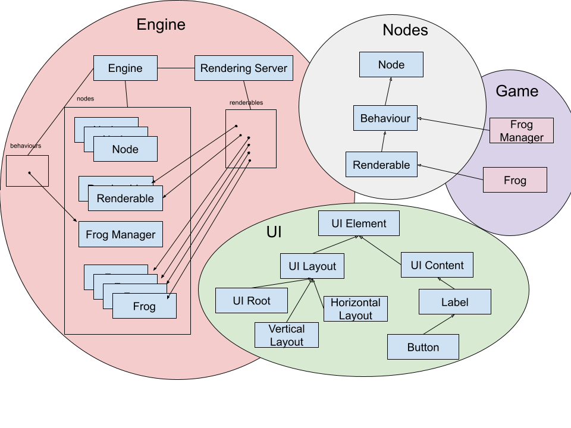

Clique Engine
Design and Implementation, in development
Clique Engine is a learning project through which I aim to explore the complex world of game engines by programming a small 2D engine named Clique Engine. I've always been drawn to the idea of creating my own engine, and this curiosity has led me to read and learn a lot from articles by people who have been working on these technologies for years, defending certain architectures and explaining how things work internally.
Additionally, thanks to open-source projects like Godot and Stride, I've had the opportunity to examine the source code of other engines. On some occasions, I've ventured to make pull requests or improvement proposals.
I've finally decided to start a project primarily for learning. The intention is not to create the perfect engine or one with many features. Instead, I aim to experiment with different architectures to better understand how a game engines works.
Through experimentation, the idea is to refine the type of engine I want to create and gradually improve the code to make it as cohesive
and simple as possible. I will be posting iterations with the progress.
(Go to iteration 1)
Features
- High-performance ECS
- Native scripting with C++
- Integrated SDL2
- Integrated Dear ImGui
- Customizable editor
- Inspector
- Tree / Hierarchy
- Console
- Super simple debugging
Iteration 2
In this version, I've implemented a much more robust interface system, in this case, with the help of Dear ImGui. This allows us to efficiently draw the UI on each frame. Additionally, by using the docking branch, we can easily customize the workspace. Creating new custom windows is now very simple thanks to the UIWindow and UIManager classes. The former is the base from which any engine window inherits, and the UIManager is responsible for managing the windows. Another advantage of using Dear ImGui is that in the future, we'll be able to use this same UI system for games.
One of the most important things in a game engine that uses the Entity Component System (ECS) is, apart from the ECS itself, the tools that allow you to work with it, the tree / hierarchy, and the inspector. We have a fully functional entity tree that allows us to view and organize the objects we have. We can open and close the hierarchy and even drag objects from one place to another to move them around the tree. Another important aspect is the inspector, which has been quite complex to implement. In C++, we cannot use some tools that other languages offer, such as C# Reflections. This makes displaying script variables much more difficult. Of course, both the tree and the inspector imply two great advances. On the one hand, the ECS; we can say that Clique Engine works alongside one of the most powerful ECS, flecs. This will allow us to achieve amazing performance by efficiently utilizing computer memory.
On the other hand, we also have scripting working with C++. We can now create our classes in the engine's native language and see their state reflected in the inspector. Both from the tree and from the inspector, we can not only explore our objects but also view the entities, components, and systems of flecs.
Iteration 1
The engine already has a first version. In this version, I've chosen NOT to use the Entity-Component-System (ECS) but rather opted for an approach more inspired by class inheritance in Godot.
The result of this initial sprint is a custom UI system used to build the engine's interface, an event system that handles input, 2D rendering, and an editor for real-time object manipulation, pausing, and viewing class properties. And this is just what you can see at first glance; there are many more components under the surface.
Below is a short demonstration video.
This is a brief summary diagram of the architecture I have designed and implemented in this first iteration.
And here's a video of many frogs, which is always a good thing. I honestly can't remember how many objects are in this example or how many FPS it achieves, but I do know it's more than 60 on a laptop that's over seven years old. The video may make it seem like there are fewer due to its quality.